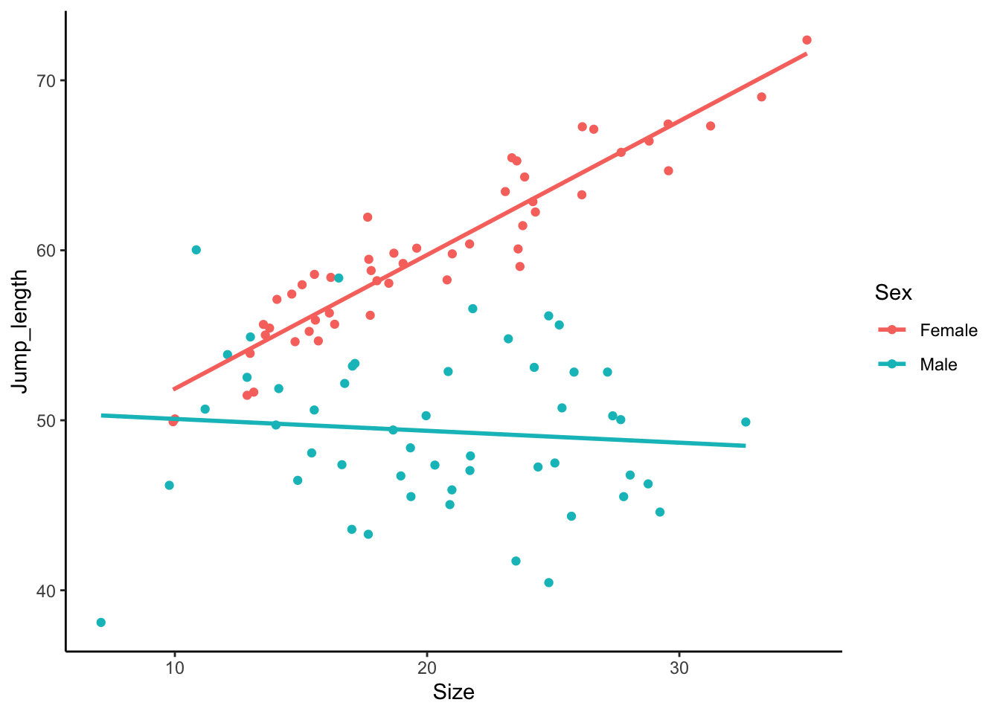

Code
jumping_frogs_data<-read.table("data/jumping_frogs.txt",header=T,sep="\t",dec=",") När vi studerade faktoriella designer hade vi två diskreta faktorer som oberoende variabler. Man skulle dock kunna ha en kontinuerlig variabel och en faktor som oberoende variablar. Det innebär att vi gör en analys med ett antal regressionslinjer, en regressionslinje för varje nivå av vår kontinuerliga faktor. Om vi istället för att göra separata regressioner för varje nivå av vår faktor (exempelvis separata regressioner för varje art) har med art som en faktor i vår analys kan vi testa om det finns en interaktion, dvs om regressionslinjens lutning skiljer sig åt mellan arterna.
Vi kallar en sådan här analys en ANCOVA, vilket står för Analysis of Covariance, där vår kontinuerliga variabel ofta benämns som vår covariat. Specifikationen av modellen är dock identisk som för en faktoriell analys, i båda fallen har vi en responsvariabel och två oberoende variabler.
Vi har undersökt hopplängden hos ett antal grodor av samma art, och även mätt deras storlek. I tillägg vet vi om de är hanar eller honor. Påverkar deras storlek hopplängden, och skiljer det sig åt mellan könen?
Ladda ner följande fil jumping_frogs.txt (högerklicka, välj “spara länk som”) och spara filen på din hårddisk i en mapp med ett lämpligt namn.
Fortsätt med att läsa in datasetet och ge det ett namn, i det här fallet kallar vi det size_nutrient_data En detalerad beskrivning i hur man läser in filer finns i vår tidigare tutorial Läsa in data i R.
Glöm inte att dokumentera din kod i ett script, med kommentarer som förklarar vad du gör! Se vår tutorial om script om du behöver påminnelse om hur man skapar och använder script.
Börja med att titta på datans struktur med str().
'data.frame': 100 obs. of 3 variables:
$ Sex : chr "Female" "Female" "Female" "Female" ...
$ Size : num 29.6 14.8 19 21 24.2 ...
$ Jump_length: num 64.7 54.6 59.2 59.8 62.9 ...$ Sex: chr betyder att värderna i kolumnen Sex är karaktärer dvs text och inte siffror.
$ Size: num betyder att värderna i kolumnen Size är decimaltal.
$ Jump_length: num betyder att värderna i kolumnen Jump_length är decimaltal
Visa sedan de fem första raderna av ditt dataset med head() för att se att allt ser korrekt ut
Vi börjar med att titta på vårt data. De plot-funktioner som är inbyggda i R är dock dåliga på att hantera två regressionslinjer (det går men är omständigt) så vi gör direkt en enkel graf med hjälp av paketet ggplot2. Om du inte sedan tidigare har paketet installerat så gör du det med koden install.packages("ggplot2"). Innan du använder paketet behöver du läsa in det i din session i R genom funktionen library()
`geom_smooth()` using formula = 'y ~ x'
Hur tolkar du datat? Påverkar grodornas vikt deras hopplängd, eller beror det på deras kön? Med andra ord, ser det ut som en interaktion?
Vi vill nu göra en ANCOVA för att undersöka om vår responsvariabel (beroende variabel) Jump_length beror av våra förklarande variabelar (oberoende variabelar) Size och Sex.
På samma sätt som när vi gjorde regression och envägs-ANOVA specificerar en modell med hjälp av funktionen lm() som står för linjär modell. Vi väljer att spara resultatet i ett objekt som vi kallar m.jumping_frogs. Jag föredrar att alla mina modeller (resultat av statistka test) har ett namn som börjar med m. för att jag skall veta vad som är dataset och vad som är modeller. Ge alltid dina modeller beskrivande namn.
I vår modell har vi vår responsvariabel (det vi har på y-axeln) till vänster om tilde-tecknet ~ och våra förklarande faktorer till höger. Eftersom vi har två faktorer behöver vi lägga till båda till höger om tilde-tecknet ~.
Notera att vi har ett multiplikationstecken i vår modell ~ Size * Sex. Multiplikationstecknet är en genväg som talar om för R att vi vill undersöka effekten av Size, effekten av Sex, samt interaktionen mellan dem (Size: Sex).
Vi börjar med en ANOVA-tabell
Analysis of Variance Table
Response: Jump_length
Df Sum Sq Mean Sq F value Pr(>F)
Size 1 462.74 462.74 37.858 1.751e-08 ***
Sex 1 2765.62 2765.62 226.266 < 2.2e-16 ***
Size:Sex 1 643.54 643.54 52.651 1.029e-10 ***
Residuals 96 1173.39 12.22
---
Signif. codes: 0 '***' 0.001 '**' 0.01 '*' 0.05 '.' 0.1 ' ' 1Vi får en ANOVA-tabell och kan inspektera resultatet. Nu kommer en otroligt viktig detalj för att tolka den. Om modellen innehåller interaktioner skall Anova-tabellen läsas nedifrån och uppåt!
Vi börjar nedifrån och ovanför Residualskommer vår interaktion Size:Sex ... 1.029e-10. Vi ser att p-värdet är mindre än 0.05, dvs interaktionen är signifikant. Det betyder att Effekten av storleken på hopplängden beror på kön. Studera figuren ovan så ser du att det stämmer.
Om interaktionen är signifikant är det inte meningsfullt att tolka varje faktor för sig (oavsett om de är signifikanta eller inte). Man kan ha en situation där det är en signifikant interaktion men ingen av faktorerna har en signifikant effekt i sig själv.
Enbart om interaktionen inte är signifikant går man uppåt i tabellen och kan tolka de enskilda effekterna av faktorerna på vanligt sätt, är de signifikanta så har de effekt på responsvariabeln.
Vi har nu en signifikant interaktion, visar att effekten av storlek på hopplängd skiljer sig åt hos de två könen. Det kan även vara intressant att veta om storlek över huvud taget har någon effekt på hopplängden för båda könen, om man studerar grafen kan man tänka sig att hanarnas storlek inte påverkar deras hopplängd. Vi kan testa det genom ett post-hoc test i paketet emmeans() som vi tidigare använde i vår envägs-ANOVA.
Om interaktionen däremot inte är signifikant, skall du inte göra en post-hoc analys av interaktionen.
Welcome to emmeans.
Caution: You lose important information if you filter this package's results.
See '? untidy' Sex Size.trend SE df lower.CL upper.CL t.ratio p.value
Female 0.7870 0.0816 96 0.625 0.9489 9.648 <.0001
Male -0.0699 0.0854 96 -0.239 0.0996 -0.818 0.4152
Confidence level used: 0.95 Som vi ser har vi modifierat vår formel jämfört med när vi gjorde ett posthoc-test i en envägs-ANOVA, eftersom vi nu har två faktorer. Den är dessutom annorlunda från tvåvägs-anova, eftersom vi inte har två nivåer av båda faktorerna. ~ Sex, var = "Size", infer = TRUE betyder att vi undersöker hur Size påverkar Size, och vi kör det separat för de två könen. infer = TRUE betyder att vi vill ha p-värden.
Vi ser att för honor har vi en signifikant effekt av storlek på hopplängd (p < 0.001) mewn ingen effekt för hanar (p = 0.415) ## Presentera din statistiska analys
Vi har en signifikant interaktion mellan storlek och kön (ANCOVA, F = 52.651, df = 1 och 96, p < 0.001) vilket betyder att hur hopplängden påverkas av storlek skiljer sig åt för de två könen. Medan hopplängden ökar med storlek för honorna (post-hoc, t = 9.648, df = 96, p < 0.001) så påverkas inte hopplängden hos hanarna av deras storlek (post-hoc, t = -0.818, df = 96, p = 0.415). I tillägg till interaktionen är huvud effekten av såväl storlek (ANCOVA, F = 37.858, df = 1 och 96, p < 0.001) som kön (ANCOVA, F = 226.266, df = 1 och 96, p < 0.001) signifikanta.
Var modellen lämplig att använda för ditt dataset?
Vi utvärderar modellen genom diagnostiska grafer genom att använda funktionen plot() på vår statistiska modell.
Vi får fyra grafer att utvärdera, de två första är viktigast. Du kan behöva trycka upprepade gånger på ENTER för att se alla graferna (i R kommer de en och en).
Residuals vs Fitted bör visa en hyfsat rak linje. Den visar hur mycket residualerna (skillnaden mellan dina data och de predikterade värderna) förändras med ökat värde på y-axeln. Residualerna motsvaras av cirklar i grafen. Om du har ett mönster i avvikelserna så betyder det att modellen inta är optimal för dina data.
Normal Q-Q visar om residualerna är normalfördelade. De bör följa den diagonala streckade linjen. Om de avviker på ett systematiskt sätt är residualerna inte perfekt normalfördelade, och vi kan behöva förändra modellen, exempelvis genom att transformera data.
Scale-Location illustrerar om variationen i datat är lika över alla värden. Om variationen ökar mycket åt höger (ett vanligt fall) så har vi större variation vid högre värden. Kan lösas genom att transformera data.
Residuals vs Leverage används för att hitta extremvärden som har onormalt stor påverkan på regressionslinjen. Mönstret i grafen är inte intressant, vi letar efter värden som ligger utanför de grå linjerna, speciellt linjerna för 1. Man bör dubbelkolla sådana värden (outliers) och fundera på om de skall vara med i datasetet. Kanske analysera såväl med som utan extremvärderna?
Vi avslutar med att göra en publiceringsduglig figur, och använder oss av paketet ggplot2. Om du inte sedan tidigare har paketet installerat så gör du det med koden install.packages("ggplot2"). Innan du använder paketet behöver du läsa in det i din session i R genom funktionen library()